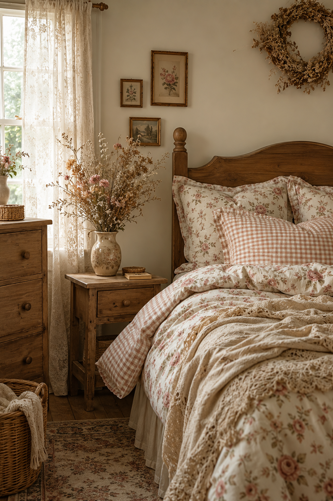

Cottagecore gets dismissed sometimes as a style that only works in an actual countryside cottage, with real exposed beams and a garden outside the window. In practice, it's one of the more achievable aesthetics for a small city apartment — it relies on soft textiles, natural materials, and a handful of small details rather than architecture you can't change.
Soft, Muted Florals — Used Sparingly
The biggest mistake people make chasing this look is covering every surface in floral pattern, which tips the room into looking busy rather than romantic. One floral element — a set of pillowcases or a single curtain panel — carries the aesthetic without overwhelming the room.
Dried Flowers Over Fresh
Fresh flowers are lovely but expensive to maintain and wilt within a week. A dried flower bouquet in a simple vase gives the same soft, natural feeling permanently, for a fraction of the ongoing cost, and it photographs just as well for Pinterest.
Gingham and Checked Patterns
Alongside florals, gingham is the other pattern most associated with this style, and it's easier to use without overwhelming a room — small-scale checks read as charming rather than busy, even across multiple pieces. Gingham pillow covers on an otherwise neutral bed are enough to signal the aesthetic clearly.
Natural Materials Over Synthetic
Wood, rattan, cotton, and linen all support this aesthetic; plastic and high-shine metal work against it. If you're choosing between two similar pieces, the one with more natural texture — a wicker basket over a plastic bin, a wooden frame over a metallic one — will almost always fit cottagecore better.
Small Details Carry the Most Weight
A ceramic dish for jewelry, a hand-embroidered handkerchief displayed in a small frame, a vintage-style teacup used as a catch-all on the dresser — these tiny, specific details do more for the aesthetic than large furniture pieces, and they're the most budget-friendly way to build the look gradually over time.
Layer this softness with our Boho Bedroom Under $50 textile approach, or explore more Budget Transforms ideas.
* As an Amazon Associate, NestlyVibes earns from qualifying purchases at no extra cost to you. See our Disclosure Policy.